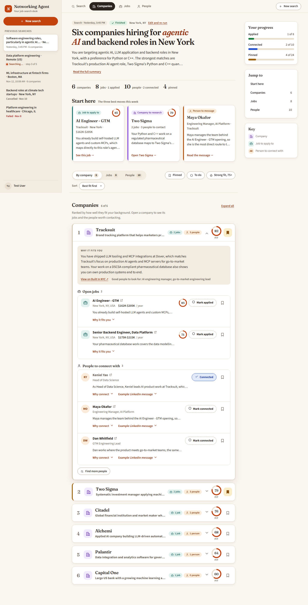

1 · Field Notes
Editorial and warm · Linen palette · Fraunces + Source Sans 3
Reads like a written briefing: a headline sentence, a "Start here" band of three best moves, then collapsible company sections with one-line previews. Includes a progress panel and a jump-to rail.